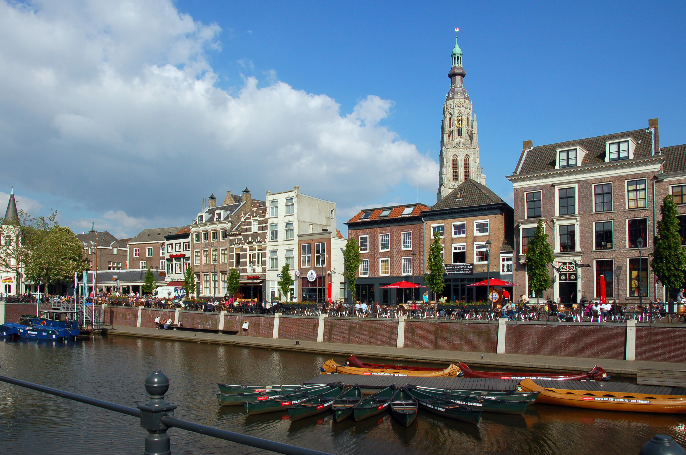

Tijs Michiel Verwest
Breda, Netherlands
Verwest was born in Breda, Netherlands, on January 17, 1969. His passion for music and artistry began when he was little and when he listened to radio shows. By the time he was fourteen, he began djing for school parties in his hometown. This would lead to him later landing residency in some local clubs, like the Spock, where he was able to better his craft, playing sets up to six hours. His music style at the time was focused more on beat and acid house music, a genre that was in at the time.